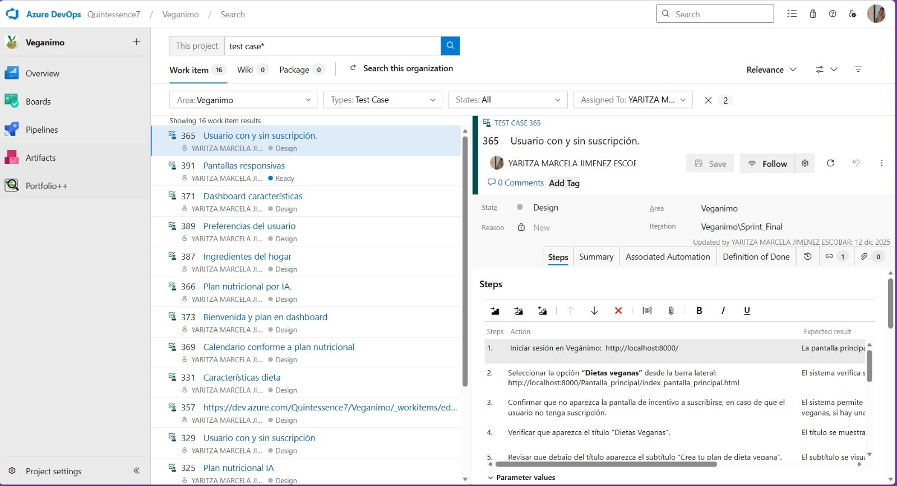
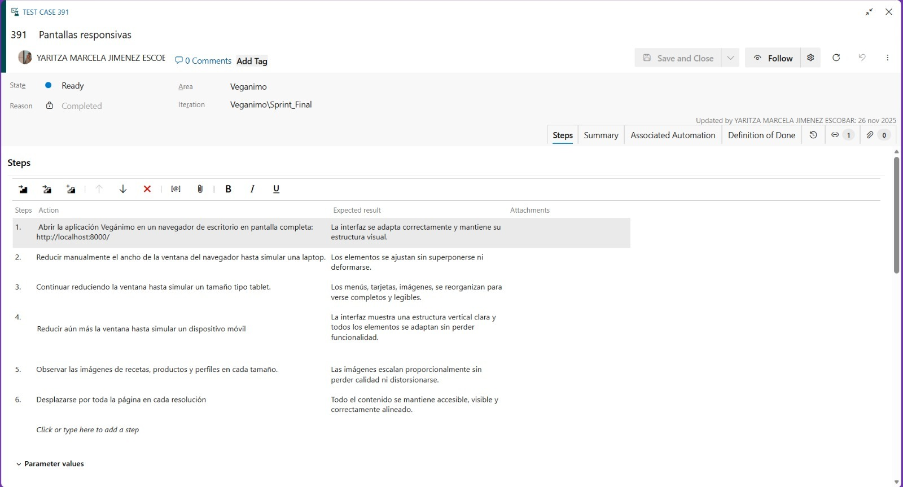

ES
Vegánimo
QA, FrontEnd

Tecnologías utilizadas
Azure DevOps
HTML
CSS
JavaScript
Competencias técnicas
Pruebas funcionales (Testing manual)
Reporte de errores (Azure DevOps)
Implementación de interfaces a partir de prototipos (Figma)
Maquetación web (HTML, CSS)
Interactividad básica (JavaScript)
